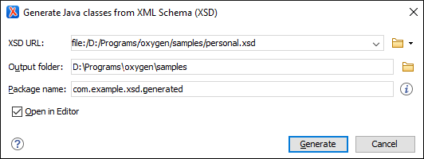

Generating Java Classes from XML Schema
Oxygen XML Editor includes a tool for generating Java classes from an XML Schema (XSD) file. The Generate Java classes from XML Schema (XSD) action for invoking the tool can be found in the Tools menu. It requires an additional add-on to be installed, so the first time you invoke the action, Oxygen XML Editor will present a dialog box asking if you want to install it. Once installed, you need to restart Oxygen XML Editor and the action will invoke the Java class generator tool.
To generate Java classes, follow these steps:
-
Select the Generate Java classes from XML Schema (XSD) action from the Tools menu.
Step Result: The Generate Java classes from XML Schema (XSD) dialog box is displayed:
Figure 1. Generate Java Classes from XML Schema (XSD) Dialog Box  - Choose or enter the XSD URL of the XML Schema document.
- Choose the path for the Output folder where the generated files will be stored.
- [Optional] You can choose the Package name for the Java package
that will contain the generated source files. If not specified, the name will be generated
based on the value of the
@targetNamespaceattribute. - [Optional] You can select the Open in Editor option to open the ObjectFactory.java file in the editor. This java class contains factory methods for all other classes in the package.
- Click the Generate button.
Result: The Java class files will be generated inside the new package, located in the specified output folder.